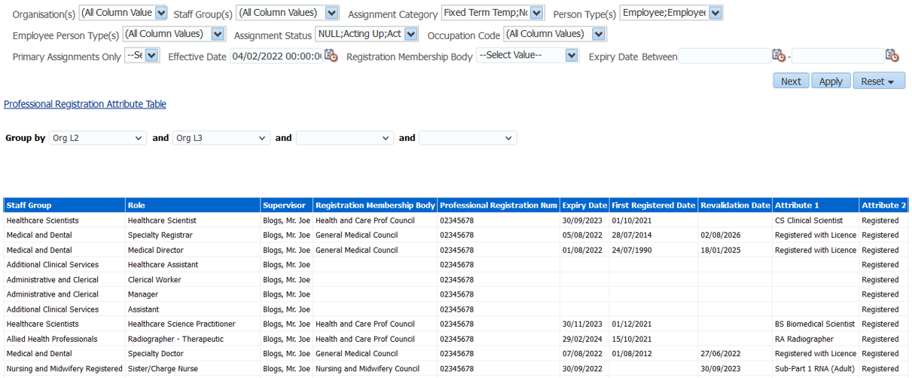
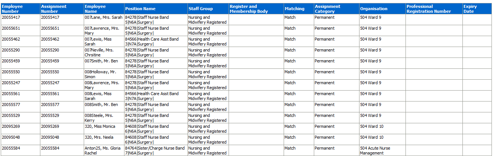
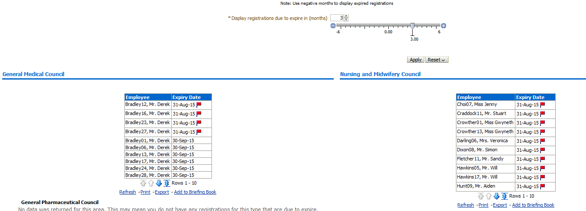
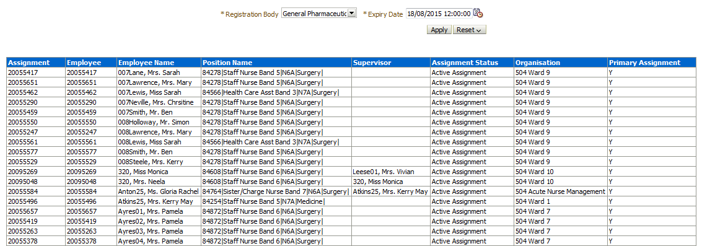
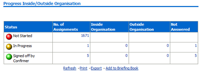
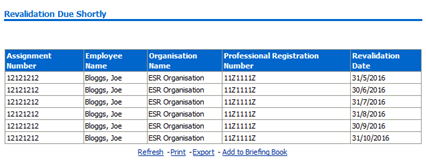
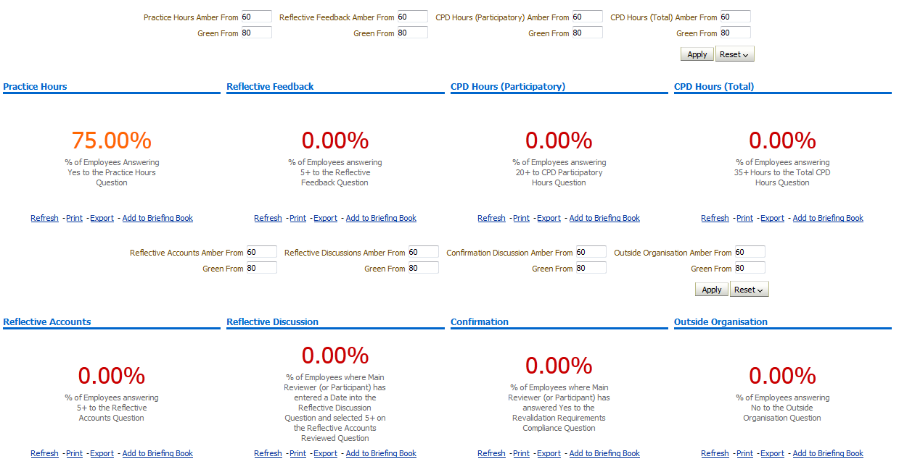
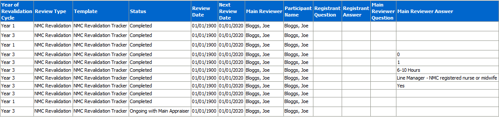
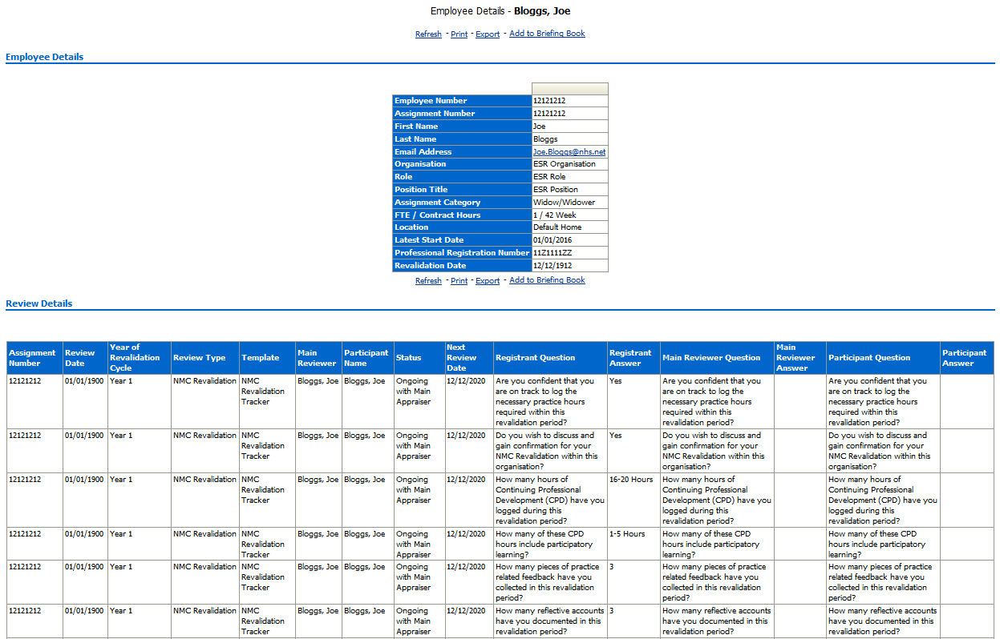
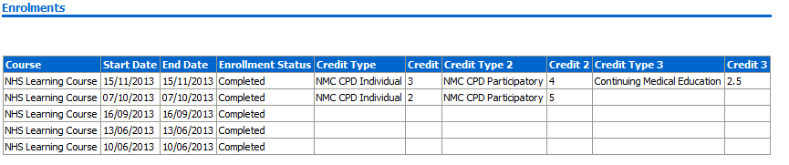

Professional Registrations Dashboard
Description
This dashboard is designed to provide the user with intelligence around the compliance of staff with the requirements of their position. These include:
-
Professional Registrations
-
Appraisal Reviews
-
Work Permits
-
DBS Checks
Allocation
This dashboard is available to the following URPs:
XXX Administrator Self Service (Payroll Approvals Not Required)
XXX Administrator Self Service (Payroll Approvals Required)
XXX BI Administration
XXX Finance Reporting
XXX Finance Reporting and Hub Mapping
XXX HR Administration
XXX HR Administration (With RA)
XXX HR Management
XXX Manager Self Service (Payroll Approvals Not Required)
XXX Manager Self Service (Payroll Approvals Required)
XXX Supervisor Self Service
XXX Supervisor Self Service (Limited Access)
Registrations and Memberships
Description
This tab is designed to list all employees and their Professional Registration and Membership details (including those without any registrations).
Column Selectors
Org Levels 1-13 x 4
Data Items
| Assignment Number | Employee Number |
|---|---|
| Employee Name | Date of Birth (Not available through HRSS) |
| Position Name | Occupation Code |
| Organisation | Staff Group |
| Org Level 1-13 | Supervisor |
| Role | Professional Registration Number |
| Registration Membership Body | First Registered Date |
| Expiry Date | E-Mail Address |
| Revalidation Date | Assignment Status |
| Attribute 1 - 20 | Bank Post Held |
Example Screenshot

Prof Reg Matching Tab
Description
This tab is designed to provide the user with a list of staff that requires a professional registration and whether they have obtained that registration.
Prompts
Matching Result (Default ‘No Match’)
Data Items
| Employee Number | Staff Group |
|---|---|
| Assignment Number | Registration Body |
| Employee Name | Matching |
| Position | Assignment Category |
| Organisation | Professional Registration Number |
| Expiry Date |
Conditional Formatting
Flag any rows where there is no match to the registration requirement.
Example Screenshot

Manage Prof Reg Expiry Tab
Description
This tab is designed to provide the user with a list of staff whose professional registration is due to expire in the near future or has expired in the near past.
Prompts
Display registrations due to expire in ‘x’ months (default +3).
Analyses
A table is provided for each professional registration / membership type.
Data Items
| Title | Description |
|---|---|
| Registration Body | Registration/Membership Body |
| Employee | Employee Name – Surname, Title First name |
| Registration Number | |
| Date of Expiry | Expiry date of the registration/ membership |
Conditional Formatting
Flag rows where the date of expiry is within the next 30 days.
Example Screenshot

Employees Without a Specific Registration or Membership
Description
This tab is designed to show employees that do not have a specific registration or membership to a Professional Body. The analysis can also be filtered by Staff Group or Occupation Code allowing users to identify specific employees.
Prompts
Registration Body
Expiry Date
Data Items
| Employee Number | Assignment Number |
|---|---|
| Employee Name | Position Name |
| Supervisor | Assignment Status |
| Organisation | Primary Assignment |
Example Screenshot

NMC Revalidation Summary Tab
Progress Inside or Outside Organisation
Description
This analysis is designed to provide a progress analysis showing where employees are within the revalidation process (and whether they have started or not).
Prompts:
Effective Date
Months to Revalidation <=
Action Links:
Clicking on the figures provided enables the user to either navigate to the Revalidation Detail page or launch a new analysis showing those employees that have not yet started the revalidation review process (as recorded in ESR).
Data Items
| Status | Outside Organisation |
|---|---|
| Number of Assignments | Not Answered |
| Inside Organisation |
Example Screenshot

Revalidations due Shortly
Description
This analysis is designed to show those employees where revalidation is due to expire within a user defined number of months.
Prompts:
Effective Date
Months to Revalidation<=
Data Items
| Assignment Number | Professional Registration Number |
|---|---|
| Employee Name | Revalidation Date |
| Organisation Name |
Example Screenshot

Key Performance Indicators (KPIs)
Description
A range of eight KPIs are provided based on registrant, main reviewer and participant questionnaire questions and answers. A description of each KPI is provided via the performance tile view and the RAG status thresholds set against each KPI can be changed by users using the prompts provided.
Prompts:
Practice Hours Amber From
Green From
Reflective Feedback Amber From
Green From
CPD Hours (Participatory) Amber From
Green From
CPD Hours (Total) Amber From
Green From
Reflective Accounts Amber From
Green From
Reflective Discussions Amber From
Green From
Confirmation Discussion Amber From
Green From
Outside Organisation Amber From
Green From
Example Screenshot

NMC Revalidation Detail Tab
Description
This analysis is designed to provide a full range of workforce and revalidation fields including all questionnaire questions and answers from the registrant, main reviewer and participants.
Prompts:
Review Date Between
Status
Data Items
| Assignment Number | Employee Name |
|---|---|
| Organisation | Job Role |
| Position | FTE |
| Latest Start Date | Employee Location |
| Professional Registration Number | Revalidation Date |
| Year of Revalidation Cycle | Review Type |
| Template | Status |
| Review Date | Next Review Date |
| Main Reviewer | Participant Name |
| Registrant Question | Registrant Answer |
| Main Reviewer Question | Main Reviewer Answer |
Example Screenshot

Action Links:
By clicking the icon next to the assignment number, users can drill down into an individual’s detailed Workforce, Revalidation Review and Course History information within the NMC Revalidation Employee Detail Tab.
NMC Revalidation Employee Detail Tab
Description
The Employee Detail page is a hidden page within the dashboard and can be accessed through the Detail page by clicking on the icon next to an assignment number. Workforce, Revalidation Review and Course History analyses are shown for the specific assignment.
Data Items
| Employee Number | Position Title |
|---|---|
| Assignment Number | Job Role |
| First Name | FTE / Contract Hours |
| Last Name | Employee Location |
| Email Address | Revalidation Date |
| Organisation | Location |
| Latest Start Date | Assignment Category |
| Year of Revalidation Cycle | Review Type |
| Template | Status |
| Review Date | Next Review Date |
| Main Reviewer | Participant Name |
| Registrant Question | Registrant Answer |
| Main Reviewer Question | Main Reviewer Answer |
| Participant Question | Participant Answer |
| Course | Course Start Date |
| Course End Date | Enrolment Status |
| Credit | Credit Type |
| Credit 2 | Credit Type 2 |
| Credit 3 | Credit Type 3 |
Example Screenshots

